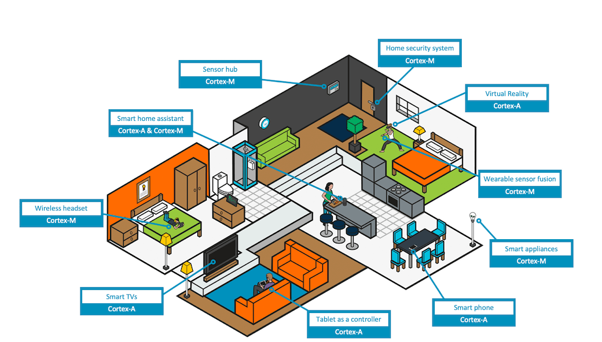
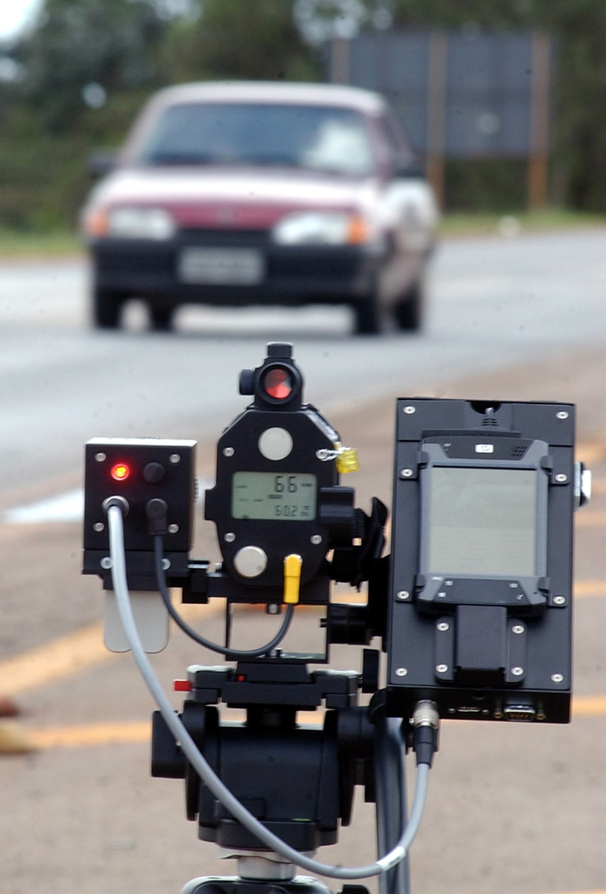
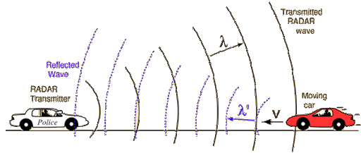

Aula 1 - Introdução#
SEL-343/615 - PROCESSAMENTO DIGITAL DE SINAIS#
Versão 2023#
Essas notas de aula podem ser compartilhadas nos termos da lincença Creative Commons CC BY-NC-ND 4.0, com propósitos exclusivamente educacionais.#
Attribution-NonCommercial-NoDerivatives 4.0 International#
from IPython.display import Image
from IPython.display import YouTubeVideo
Aplicações: Consumers#

Aplicações: Radar de Rodovia#

Uma das formas de se fazer isso é usando efeito Doppler#

Para poder desenvolver um sistema como esse é preciso entender a dinâmica ou processo físico que relaciona as grandezas envolvidas.#
from IPython.display import HTML
print('https://www.youtube.com/watch?v=cMlGyIJH5L8')
YouTubeVideo("cMlGyIJH5L8")
https://www.youtube.com/watch?v=cMlGyIJH5L8